Topic 1: Introduction to C¶
This topic will provide a gentle introduction to the basics of procedural programming using the C programming language. C has a long history of use in computer systems programming which involves developing software to connect the low-level computer hardware to high-level, user-facing application software. Computer systems programming usually requires careful consideration of performance and resource constraints. Examples of computer systems software include compilers, operating systems, databases, numerical libraries, and embedded controllers. C was developed in the early 1970s at Bell Laboratories by Ken Thompson, Dennis Ritchie, and many others. C was originally developed for the purposes of writing an early version of the Unix operating system. The Linux operating system which you will be using in the programming assignments was inspired by these original versions of Unix, and the Linux kernel is also written in C. C provides a nice balance between high-level abstractions for productive software development and low-level control over the hardware, and thus it remains one of the primary languages chosen by computer systems programmers.
We will assume students have taken an introductory programming course in a dynamic programming language (e.g., Python, MATLAB). This means we are assuming students are familiar with basic programming constructs such as variables, literals, operators, expressions, functions, conditional statements, and iteration statements. Therefore this topic will focus more on the specifics of C syntax and a precise way of illustrating execution semantics which we will use throughout the rest of the course. We will also start by focusing more on (precisely) reading C programs than on writing C programs. Just as when learning a foreign language, one must learn how to read before one can learn how to write!
1. Statements, Syntax, Semantics, State¶
At a fundamental level, any procedural program can be defined by the four S's: statements, syntax, semantics, and state. The following diagram illustrates the interaction between the four S's.

Let's start with an example based on the English language. A program is a sequence of statements. For example the following might be an English language program:
- Put the letter in the envelope.
- Seal the envelope.
- Address the envelope.
- Put a stamp on the envelope.
- Put the envelope in the mailbox.
In this context, a statement is just an English language sentence. For example, "Put the letter in the envelope." is a statement. The syntax is the proper English language grammar required for forming valid sentences. For example, syntax tells us that the first word of a statement should start with a capital letter, that a verb should have proper tense, and a statement should end with an appropriate choice of punctuation. The semantics is the meaning of a sentence. For example, semantics tells us that a letter is a "written, typed, or printed communication, especially one sent in an envelope by mail or messenger", and the semantics also help us understand that putting a letter in an envelope makes sense. The statement "Put the elephant in the envelope." would be syntactically correct but would not make much semantic sense. Finally, the state involves the memory of prior statements (i.e., the state of the world) as we read or "execute" these statements. To execute a statement, we use the syntax and semantics to understand how that statement changes the state of the world. The "execution arrow" points to the current statement we are reading or executing. So in this example, the state captures the current status of the envelope. Is the envelope sealed? Is it addressed? Does it have a stamp on it? Is it in the mailbox? Here is a quick summary of the four S's:
- Program: sequence of statements
- Statement: sentence
- Syntax: sentence grammar
- Semantics: sentence meaning
- State: memory of prior statements
When executing a program we often want to be more precise on exactly how a program's syntax and semantics modify the state. We will use state diagrams as a way to capture a program's execution precisely. Although drawing these diagrams may initially seem overly tedious, it is critical that students master this skill early. By the end of the course we will be drawing very complicated state diagrams to precisely demonstrate our understanding of the syntax and semantics of sophisticated programming paradigms; but this is only possible if students work on mastering this skill right from the beginning of the course.
The following is an example of a state diagram for executing a simple English program with five statements.
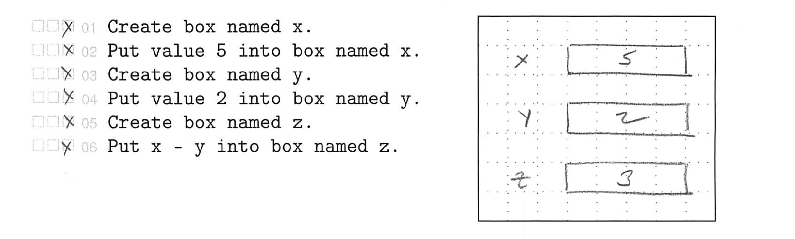
Each statement includes a prefix with a line number and small set of boxes, and there is space on the right to capture the state of the program. To execute this program, we simply use the following steps:
- Identify which statement the execution arrow is pointing to
- Use the syntax and semantics to understand how this statement will change the state
- Update the state accordingly using the space on the right
- Cross off the box to the left of this statement
- Advance the execution arrow to point to the next statement
While we have explored statements, syntax, semantics, and state in the context of an English language program, our understanding applies equally well to computer languages. In the rest of this topic, we will learn the basics about statements, syntax, semantics, and state in the C programming language.
2. Variables, Literals, Operators, Expressions¶
We begin by exploring the statements, syntax, semantics, and state associated with four fundamental C concepts: variables, literals, operators, and expressions.
- Variable: a box (in the computer's memory) which stores a value
- Literal: value written exactly as it is meant to be interpreted
- Operator: symbol with special semantics to "operate" on variables and literals
- Expression: combination of variables, literals, and operators which evaluates to a new value
2.1. Variables¶
A variable is a box in the computer's memory which stores a value. It is critical to keep the concept of a variable separate from the concept of a value. A variable is not a value. A variable stores a value. The name of a variable is called its identifier. In C, identifiers can include lowercase letters, uppercase letters, numbers, and underscores. However, identifiers cannot start with a number. Identifiers also cannot be keywords which are reserved words that have special meaning within the C programming language. These rules are part of the C syntax for identifiers. The following is a list of valid identifiers (i.e., correct syntax):
1 2 3 4 5 6 7 8 | my_variable MY_VARIABLE myVariable MyVariable variable_0 variable_1 _variable __variable__ |
The following is a list of invalid identifiers (i.e., incorrect syntax):
1 2 | 0_variable variable$1 |
The first identifier has invalid C syntax since it starts with a number,
and the second identifier has invalid C syntax since it includes the $
character. These are called syntax errors.
There are many styles of identifiers. For example, snakecase favors
using lowercase with underscores to separate words (i.e., my_variable),
while camelcase favors using lowercase with uppercase to separate words
(i.e., myVariable, MyVariable). Often we might favor using uppercase
with underscores to indicate constant variables (i.e., MY_VARIABLE),
and we might favor using leading and training underscores to indicate
special internal variables (i.e., __variable__). Note that the C
compiler does not care about which valid identifier a programmer uses to
name any given variable. So why not simply name each variable a0, a1,
a2, etc? While the C compiler does not care, the reader of your
program definitely cares about which valid identifiers a programmer
uses. Careful and consistent selection of identifiers can significantly
improve the readability of your programs, which in turn makes your
programs easier to debug, maintain, and extend. It is also important to
note that in practical situations the programmer actually does not get to
choose his or her own coding style (or coding conventions). A company or
open-source project will usually have its own coding conventions that it
expects its developers to follow. Similarly, in this course we have our
own coding conventions that we expect students to follow. The coding
conventions are located here:
All variables also have a type. The type specifies the kind of values
that can be stored in a variable. In dynamically typed languages (e.g.,
Python, MATLAB) the "types" of variables are not be known until run time
(i.e., dynamically), while in statically typed languages (e.g., C, C++)
the "types" of variables must be known at compile time (i.e.,
statically). This is an absolutely critical distinction that also has
fundamental implications with respect to the tension between
productivity- vs. efficiency-level languages. We will learn more about C
types in Topic 3. For now, we will only use variables of type int which
can store signed integer values. Signed integers include zero, negative
whole numbers, and positive whole numbers.
We can now introduce our very first example of a C statement. A variable declaration statement is used to create a new variable with a specific name and type. The following is a list of valid variable declaration statements:
1 2 3 4 5 6 7 8 | int my_variable; int MY_VARIABLE; int MyVariable; int myVariable; int variable_0; int variable_1; int _variable; int __variable__; |
Each statement creates a new box to hold a value of type int. As an
aside, int is a keyword meaning that it cannot be used as an
identifier for a variable. Note that C syntax requires all C statements
to end in a semicolon. Forgetting to include the semicolon is a syntax
error (meaning the C compiler cannot understand the syntax).
Activity 1: Valid vs. Invalid Identifiers
Which of these identifiers are valid and which are invalid?
1 2 3 4 5 6 7 8 9 10 11 12 13 14 | foo_bar 42_foo_bar 42-foo-bar _42_foo_bar FOO_BAR @FOO_BAR __FOO_BAR__ foobarbaz fooBar%Baz fooBar_BazFoo m_foo _ __ int |
2.2. Literals¶
A literal is a value written exactly as it is meant to be interpreted. Contrast a literal to a variable. A variable is a name for a box that can hold many different values (all of the same type!). A constant variable is a name for a box that can hold a single (constant) value. A literal is not a name; it is not a variable. A literal is literally the value itself. Some example integer literals are shown below.
1 2 3 4 | 42 -42 0x42 0xdeadbeef |
The integer literal on line 1 is literally the number 13 in base 10. The
integer literal on line 2 is literally the number -42 in base 10. The
integer literal on line 3 is literally the number 42 in base 16 (i.e., 66
in base 10). Finally, the integer literal on line 4 is literally a large
number in base 16. Notice that C syntax specifies that by default integer
literals are assumed to be base 10, but if the number includes a 0x
prefix then the integer literal is in base 16 (hexadecimal).
Activity 2: Hexadecimal Literals
Calculate the decimal value of the following hexadecimal literals.
1 2 3 4 | 0x13 0x1000 0xaa 0xcafe |
2.3. Operators¶
An operator is a symbol with special semantics to "operate" on variables
and literals. The very first operator we will study will be the
assignment operator represented with the equal symbol (=). The
assignment operator "assigns" a new value to a variable (i.e., puts a
value into the variable's box).
This brings us to our second example of a C statement. An assignment statement combines the assignment operator with a left-hand side (LHS) and a right-hand side (RHS). The LHS specifies the variable to change, and the RHS specifies the new value (possibly using a literal). An example of a program with two statements is shown below.
1 2 | int my_variable; my_variable = 13; |
The first line is a variable declaration statement, and the second line is an assignment statement. The semantics are that the first statement creates a box in the computer's memory, and the second statement stores the value 13 in that box.
A variable declaration statement and an assignment statement can be combined into a single initialization statement. An example of the same program implemented with a single statement is shown below.
1 | int my_variable = 13; |
We have now learned about three kinds of C statements: variable declaration statements, assignment statements, and initialization statements. It is important to distinguish between these three kinds of statements, especially since in C++ each of these three kinds of statements can result in quite different semantics.
There are many other operators besides the assignment operator. For
example, there are arithmetic operators for addition (+), subtraction
(-), multiplication (*), division (/), and modulus (%).
All of these operators can operate on integer values. We will discuss in
Topic 3 subtle issues related to the fact that the computer can only
represent integer values up to a specific minimum and maximum value. Note
that the division operator (/) is for integer division meaning that 6
/ 2 is 3 and 5 / 2 is 2 not 2.5. So the result of an integer division is
always rounded towards zero, or in other words the fractional part is
simply removed (truncated). Why does the C programming language round
towards zero? Why not round to the nearest whole number? Again the C
programming language is choosing efficiency; it is slightly more
efficient to simply remove the fractional part vs other rounding schemes.
Activity 3: Integer Division and Modulus
Calculate the result of applying the following integer division and modulus operators.
1 2 3 4 5 6 7 8 9 10 11 12 | 15 / 2 15 / 3 15 / 4 15 / 5 -15 / 2 -15 / 3 -15 / 4 -15 / 5 15 % 2 15 % 3 15 % 4 15 % 5 |
2.4. Expressions¶
An expression is a combination of variables, literals, and operators which evaluates to a new value. A variable's identifier is itself an expression that evaluates to the value stored in that variable. An example of an expression is shown below.
1 | 5 - 3 |
This expression evaluates to the value 2. Another example expression is shown below.
1 | 8 / 2 * 2 + 2 |
This expression can evaluate to different values depending on the order in which we apply the sequence of operators. Several options for how to evaluate this expression are shown below.
1 2 3 4 5 | ((8 / 2) * 2) + 2 evaluates to 10 (8 / 2) * (2 + 2) evaluates to 16 8 / (2 * (2 + 2)) evaluates to 1 (8 / (2 * 2)) + 2 evaluates to 4 8 / ((2 * 2) + 2) evaluates to 1 |
Note that the final expression evaluates to 1.33 but since this is the integer division we round towards zero resulting in a value of 1. The C programming language includes semantics to unambiguously specify the correct answer based on an operator precedence table. An initial version of this table which just includes the operators we have already learned about in this topic is shown below.
| Category | Operator | Associativity |
|---|---|---|
| Multiplicative | * / % |
left to right |
| Additive | + - |
left to right |
| Assignment | = |
right to left |
Early rows have higher precedence than lower rows. So the multiplicative operators have the highest precedence and then the additive operators. The associativity column indicates the order to apply the operators when those operators are at the same precedence. So for the above example, we first consider the multiplicative operators and then move from left to right applying those operators. So we apply the division operator first, then the multiplication operator, and finally the lower precedence addition operator:
1 | ((8 / 2) * 2) + 2 = 10 |
Note that all operators are included in the precedence table, even the assignment operator. Since the assignment operator is the last row it has the lowest precedence. This means we evaluate the LHS and RHS of the assignment operator first before doing the actual assignment. An example is shown below.
1 | x = 5 - 3 |
We apply the subtraction operator first and so the RHS evaluates to the
value 2. Then we apply the assignment operator which sets the value of
variable x to be 2. Note that every expression evaluates to a value,
and since x = 5 - 3 is an expression then it also evaluates to a value!
The C programming language specifies that the value of applying the
assignment operator is the value of the LHS. This enables complicated yet
syntactically correct expressions such as:
1 | y = x = 5 - 3 |
As before, the addition operator has the highest precedence. The precedence table specifies that the corresponding associativity is right to left. This is what the expression would look like if we inserted according to the precedence table.
1 | y = (x = (5 - 3)) |
The expression 5 - 3 evaluates to 2, and the expression x = 2
evaluates to the value 2 (with a side-effect of updating the variable
x). In other words, this expression sets the value of both variable x
and y to 2.
One key take-away from this discussion is that while an expression might be syntactically correct, it doesn't mean that it is readable. We should always prefer explicitly using parenthesis to indicate the desired order of operations.
Activity 4: Operator Precedence
Calculate the result of evaluating the following expressions.
1 2 3 4 5 6 | 8 / 2 * 2 * 2 8 / (2 * (2 * 2)) 8 / 2 + 2 * 2 (8 / (2 + 2)) * 2 x = 2 x = 8 / 2 |
2.5. Simple C Program¶
We can now compose assignment and initialization statements which use variables, literals, operators, and expressions to create our very first simple C program. Let's translate the English "program" we saw in Section 1 into a C program.
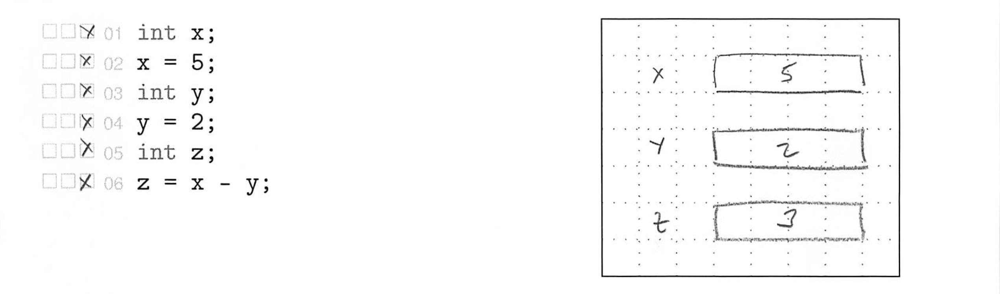
To execute this program, we simply use the same steps we used before:
- Identify which statement the execution arrow is pointing to
- Use the syntax and semantics to understand how this statement will change the state
- Update the state accordingly using the space on the right
- Cross off the box to the left of this statement
- Advance the execution arrow to point to the next statement
This program uses a variable declaration statement to create a variable
named x (line 1), uses an assignment statement to set the value of
variable x to 5 (line 2), uses another variable declaration statement
to create a variable named y (line 3), uses another assignment
statement to set the value of variable y to 2 (line 4), uses another
variable declaration statement to create a variable named z (line 5),
and finally uses another assignment statement to set the value of
variable z to the value of the expression x - y (line 6).
Let's look at another simple C program that illustrates an issue with uninitialized variables.
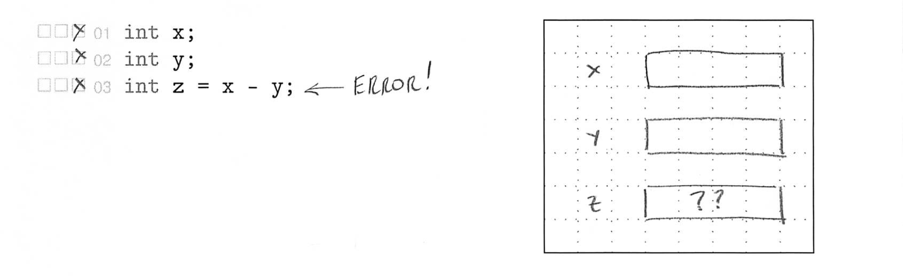
Lines 1 and 2 are variable declaration statements that create boxes in our state diagram, but we do not assign a value to these boxes. These variables are called uninitialized. An uninitialized variable is not itself a problem. There is nothing syntactically or semantically wrong with lines 1 and 2. However, using an uninitialized variable does have undefined semantics. What does it mean for something to have undefined semantics? If something has undefined semantics it could: cause a compile time error message, cause a runtime error message, cause your program to crash, cause your program to hang forever, cause nothing wrong to happen, delete your hard drive, or crash your entire computer. So we should avoid doing anything which has undefined semantics. However, this begs the question, why does the C programming language even include undefined semantics? Why doesn't the C programming language specify that these uninitialized variables are automatically initialized to zero? This would certainly avoid undefined semantics and many common bugs. Recall that C is a computer systems programming language optimized for efficiency. Automatically initializing variables to zero would add a small but non-trivial overhead which could quickly have an impact on the overall performance of your programs. When faced with a choice between safety and efficiency, the C programming language will almost always choose efficiency. This is why it is an efficiency-level language! However, this also means that C programmers must be very careful in how they write their programs to avoid undefined behavior at all costs. This example also illustrates that sometimes you will need to include additional annotations to your state diagrams to explain the execution of a program. There is nothing wrong with including such additional annotations; the key is to make sure your state diagrams effectively capture your understanding of the program's execution.
Let's look at one more simple C program that illustrates how values are copied between variables, and how we can assign new values to variables.
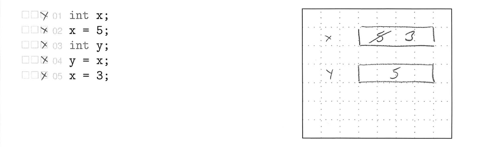
Line 4 uses an assignment statement to copy the value in variable x
into the variable y. It is critical to remember, that assignment
copies the actual value. It does not copy any kind of high-level
reference as in some dynamic programming languages (e.g., Python). Line 5
uses an assignment statement to update the value in variable x. Note
that line 5 does not create a new variable named x (it is an
assignment statement, not an initialization statement), and line 5 does
not modify the value in variable y in any way (since variable y
made a copy of the value 5). Also notice that we should never erase
values in our state diagrams. Instead, you should simply cross out the
old value and enter the new value. This way we can easily see how the
state has changed over the execution of the program.
Activity 5: State Diagram for a Simple C Program
Draw a state diagram corresponding to the execution of this program. Remember to check off the execution boxes as you execute each statement. When executing line 4, recall the operator precedence table discussed in Section 2.3.
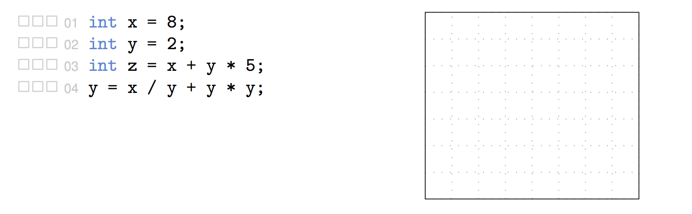
3. Blocks, Scope, Name Binding¶
Blocks, scope, and name binding provide syntax and semantics to help manage more complex procedural programs.
3.1 Blocks¶
A block is a compound statement, meaning it is a new kind of statement
which is made up of a sequence of other statements. Blocks are indicated
using curly braces. An open curly brace ({) is used to open a block,
and a close curly brace (}) is used to close a block. Blocks will be
critical for defining functions, conditional statements, and iteration
statements. Two examples of blocks are shown below.
1 2 3 4 5 6 7 8 9 | {
int x = 2;
int y = x;
};
{
int z = 3;
z = z + 1;
};
|
Since a block is itself a statement, it has a trailing semicolon. However, this semicolon is optional, and in practice it is usually omitted.
1 2 3 4 5 6 7 8 9 | {
int x = 2;
int y = x;
}
{
int z = 3;
z = z + 1;
}
|
3.2 Scope¶
The scope of a variable is the region of code where it is accessible. Blocks create new local scopes, and variables declared within a block are only accessible from within that block. An example of a simple C program which uses a block to create a local scope is shown below.
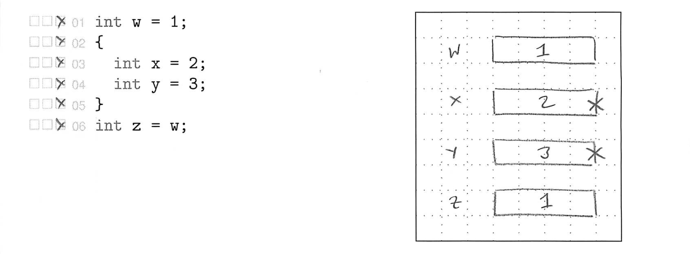
Notice that we have introduced some additional notation in our state diagram. We use an X on the right of a variable's box to indicate that this variable has gone out of scope and thus has been deallocated.
Let's look at another example of using a block to create a local scope.
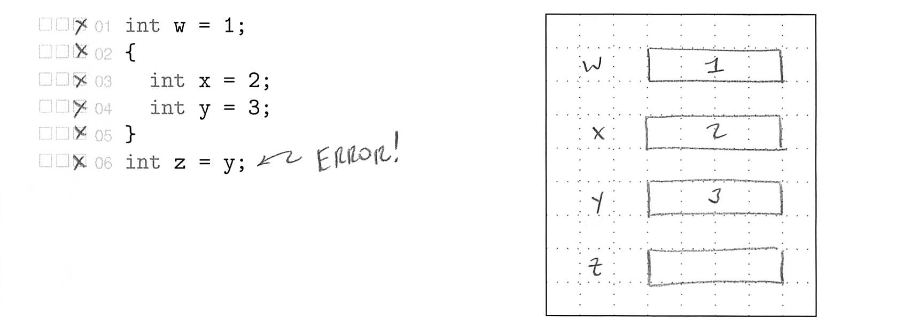
There is an error on line 6. We cannot access the value of variable y
because variable y went out of scope (i.e., was deallocated) on line 5
when the block closed. This would cause a compile time error.
Blocks can be nested. Let's look at another example where we read and write variables in an outer block.
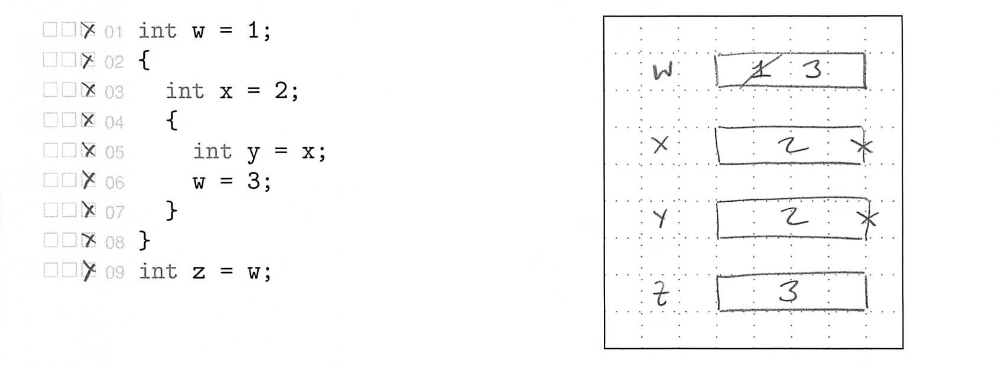
The variables x and w are accessed within the inner block, even
though these variables were declared in outer blocks. The change to
variable w persists even after the inner block closes (i.e., changes
are not "undone" in any way).
Notice that as we open new local scopes we gradually allocate variables from top to bottom in our state diagram, and then as we close local scopes we gradually deallocate these variables from bottom to top in our state diagram. The variables are allocated and deallocated as in a stack. In a stack of cards, we place cards on top of each other, and then we draw cards from the top. In a stack of cards the stack grows up and then "shrinks" down. In the C stack, the stack grows down and then "shrinks" up. We will start calling the space on the right of our state diagrams the "stack".
Activity 6: State Diagram for Nested Scope
Draw a state diagram corresponding to the execution of this program. Remember to use an X to indicate when variables go out of scope and are thus deallocated.
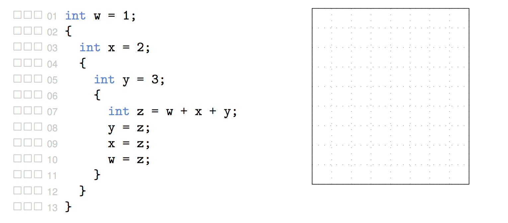
3.3 Name Binding¶
So far, all of our code examples have only had one variable with any given name. However, in large programs we will have to reuse the same variable name in different places. Name binding is the process of using well-defined rules to determine which variable declaration a specific variable name refers to. Note that in C, name binding happens at compile time. This means that we should be able to determine which variable declaration a specific variable name refers to based just on the code in our state diagrams (i.e., we should not need to use the runtime information in the stack).
C does not allow two variables to have the same name in the same block. The following code is syntactically incorrect and will cause a compile time error:
1 2 | int x = 3; int x = 3; |
However, C does allow two variables to have the same name in different blocks.
1 2 3 4 5 6 7 8 9 | {
int x = 3;
int y = x;
}
{
int x = 5;
int z = x;
}
|
This makes sense, since the variable named x declared on line 2 has
been deallocated by the time we reach the variable initialization
statement on line 7. There is no ambiguity on which variable declaration
for x is being referenced on lines 3 and 8.
C also allows two variables to have the same name in nested scope.
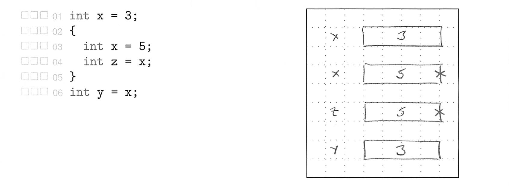
In this case, there are two variables with the name x that are in scope
at the same time. The variable named x declared on line 3 is said to
mask the variable named x declared on line 1. There are also two
places where x is being referenced: first on line 4, and then again on
line 6. The name binding rules specify which variable named x is being
referenced on lines 4 and 6. The name binding rule in C is follows:
- start from where the variable
xis being read or written - work backwards out of the blocks, through open curly braces
- the first declaration of variable
xis the one to use
It is like peeling an onion. We peel off each block one at a time until
we find the first declaration of the variable x. In the above example,
if we start on line 4, then we would immediately find a variable named
x which was declared earlier in the same block. If we start on line 6,
then we don't even need to worry about the variable named x on line 3
since it has already gone out of scope.
Let's look at another example with three variables named x.
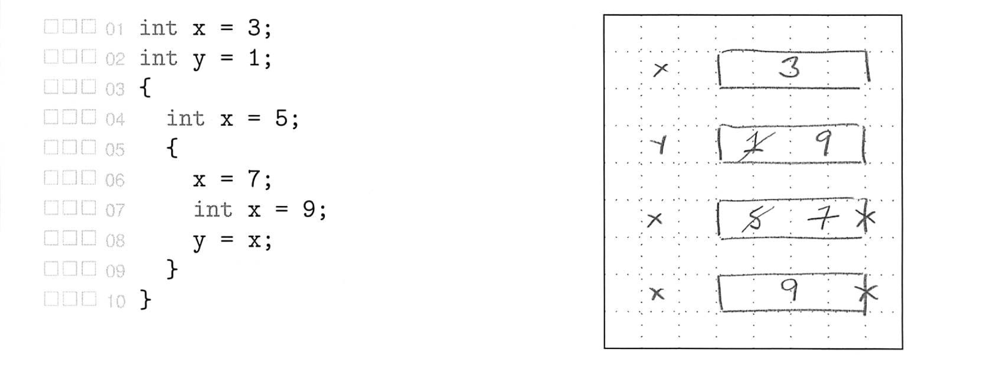
The access to x on line 6 corresponds to the variable declared on line
4, and the access to x on line 8 corresponds to the variable declared
on line 7.
Note that as with operator precedence, it is usually best if you develop your programs to avoid subtle name binding issues. Ideally, it should be obvious from reading your program which variable name refers to which variable declaration without needing to carefully consider the name binding rules.
Activity 7: State Diagram for Name Binding
Draw a state diagram corresponding to the execution of this program.
Remember to use an X to indicate when variables go out of scope and
are thus deallocated. Use the name binding rules to determine which
variable named x is being referenced on line 6, and which variable
named y is being referenced on lines 6 and 8.
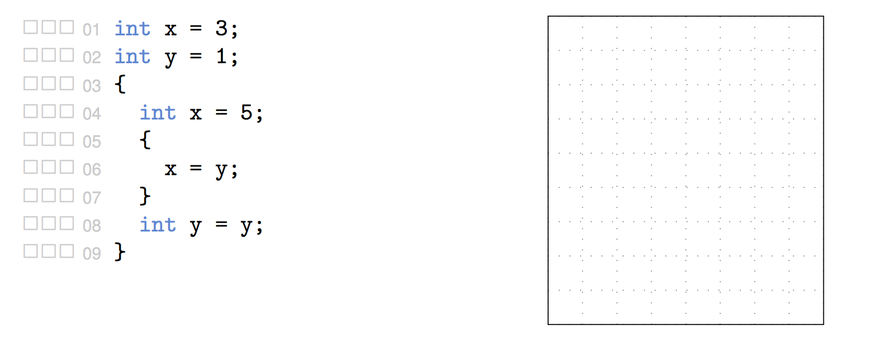
4. Functions¶
A function gives a name to a parameterized sequence of statements. A
function definition describes how a function behaves. A function call
is a new kind of expression to execute a function. Note that all code in
C programs are inside functions! Functions are sometimes called
procedures, and they are the key to procedural programming. In this
section, we will discuss the syntax of a function definition before
discussing the syntax and semantics of a function call. We will explore
several different examples of simple C programs that use functions, and
we will conclude by introducing the printf function which can be used
to print values to the screen.
4.1. Function Definition¶
A function definition defines the sequence of statements that make up the function. The syntax for a function definition is shown below.
1 2 3 4 | rtype function_name( ptype0 pname0, ptype1 pname1, ... ) { function_body; } |
The function name is a unique identifier for the function. Function
names must follow the same restrictions on identifiers as with variable
names. The function body is the parameterized sequence of statements.
The parameter list is a list of parameter types and names separated by
commas (e.g., ptype0 pname0 on line 1). Finally, the return type is
the type of the value returned by the function (e.g., rtype on line 1).
Note that we call just line 1 the function prototype. A function
prototype specifies the interface for the function (i.e., name,
parameter types, and return type) without specifying the actual
implementation. An example function that returns the square of an integer
is shown below.
1 2 3 4 5 | int square( int x )
{
int y = x * x;
return y;
}
|
In this example, the function name is square, the function body
consists of two statements, the parameter list includes one parameter
named x of type int, and the return type is also int. Line 4 is a
new kind of C statement called a return statement. A return statement
first evaluates the given expression and then returns the corresponding
value as the result of calling the function. Let's look at another
example function.
1 2 3 4 5 6 | int main()
{
int a = 10;
int b = a * a;
return 0;
}
|
This function does not take any parameters. The function named main is
special. It is always the first function executed in a program. The
main function returns its "value" to the "system", and this value is
called the exit status of the program. On Linux, returning zero means
success, and returning an integer greater than zero means failure.
Note that in this main function we could refactor the expression on
line 4 into the square function. This might make it easier to reuse a
parameterized sequence of statements in many different places. Or it
might be more effective to just directly calculate the square as shown.
The art of determining how to refactor code into functions is a
fundamental part of procedural programming.
4.2. Function Call¶
A function call is a new kind of expression with new syntax and semantics that is used to execute the parameterized sequence of statements in a function definition. The syntax for a function call is shown below.
1 | function_name( pvalue0, pvalue1, ... ) |
So to call a function we simply use its name and pass in one value for each parameter in the parameter list surrounded by parenthesis. If the parameters are themselves expressions, then we must evaluate these expressions first before calling the function. A function call is itself an expression which evaluates to the value returned by the function. Function parameters and "local" variables declared within a function body are effectively in a new block which is called the function's stack frame. Note that the value of each parameter is copied into these local variables. This is known as call-by-value semantics. We will learn about call-by-pointer and call-by-reference in later topics.
The caller is the code which is calling the function, and the callee is the function which is being called. The precise semantics for calling a function are shown below.
- Evaluate parameters, allocate temporary storage in caller's stack frame if necessary
- Allocate storage on caller's stack frame for the return value if necessary
- Allocate the callee's stack frame with space allocated for parameters
- Copy evaluated parameters from step 1 into callee's stack frame
- Record location of function call
- Move execution arrow to first statement in callee
- Evaluate statements inside the callee
- At return statement, evaluate its argument, update appropriate variable in caller
- Return execution arrow back to where function was called in caller
- Deallocate the callee's stack frame
We will use several examples to illustrate these ten steps. Our first
example illustrates a basic function call for the square function
discussed in the previous section.
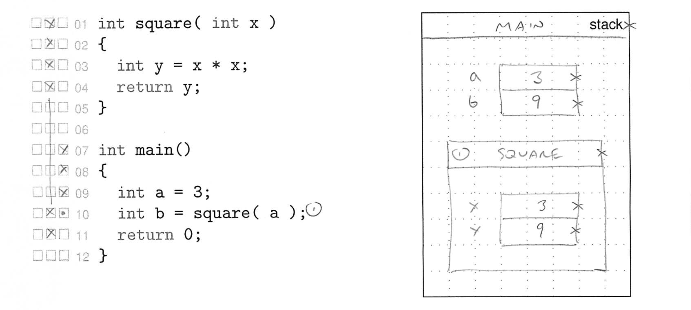
As mentioned above, the program starts its execution with the special
main function. The execution of lines 7-9 is as expected. Line 10 is a
variable initialization statement, which means we first must allocate
space on the stack for the new variable, and then we evaluate the RHS
which in this case is a function call. Let's work through all ten steps
involved in the function call semantics.
Step 1: There is a single parameter which is a variable name, and a variable name simply evaluates to the value stored in that variable.
Step 2: Because this function call is on the RHS of a variable
initialization statement, there is no need to allocate any extra space on
the caller's stack frame for the return value. We can directly write the
return value into b.
Step 3: We allocate the callee's stack frame on the stack by drawing a nested box in the state diagram for the callee's stack frame. This box should be labeled with the name of the function. We also allocate space for each parameter. In this example, there is only one parameter so we allocate space for that parameter and label it appropriately in the state diagram.
Step 4: We initialize the parameters by copying the parameter value
into the appropriate box in the callee's stack frame. In this example,
this involves copying the value 3 into the box for x in the square
functions stack frame.
Step 5: We record the location of the function call by drawing a
unique number in a circle on the actual source code where the function is
called and on the callee's stack frame. In this example, we label
square on line 10 and the corresponding stack frame with the number 1.
This information needs to be recorded in the stack so that we know where
to return the execution arrow once the function call is complete.
Step 6: We move the execution arrow up to the function name. We indicate this on our state diagrams by entering a dot into the execution box next to the line where the function is called (i.e., line 10). Every time we move our execution arrow backwards, we will shift marking execution boxes one column to the left. Notice how we do mark the box on lines 1 and 2. This indicates the process of setting up the stack frame and opening the local scope of the function body.
Step 7: We evaluate the statements inside the callee. Notice how we
allocate the local variable y on the callee's stack frame.
Step 8: At the return statement on line 4, we evaluate its argument
(which is just the variable name y which evaluates to the value 9), and
then we update the appropriate variable in the caller. In this example,
this means updating the variable b in the caller.
Step 9: We move the execution arrow back to where the function was called in the caller. How do we know where the function was called? Step 5 recorded the location of the function call in the stack frame. Notice how line 5 is not executed. The return statement immediately moves the execution arrow without executing any additional statements in the function body. We will use a line every time we skip statements when moving our execution arrow forward.
Step 10: Finally, we deallocate the callee's stack frame by marking an X next to all variables allocated on the callee's stack frame and by also marking an X next to the name of the function.
Once we have finished with all ten steps, then we can continue executing
the statement where the function was called by substituting the return
value for the actual function call. Notice how at the very top of the
state diagram we have labeled the entire stack as main. This indicates
that everything on the stack is essentially nested within the stack frame
of the top-level main function.
Activity 8: State Diagram for a Simple Function Call
Consider the following simple function to calculate whether or not a given parameter is odd. The function will return the value 1 if the parameter is odd and the value 0 if the parameter is even. Draw a state diagram corresponding to the execution of this program. Remember to use a dot to indicate a function call, to shift to the left one column when the execution arrow moves backwards, and to use a line to indicate skipping statements.
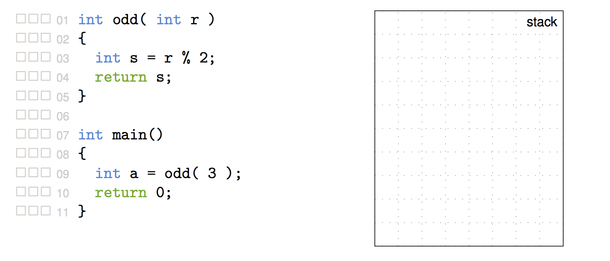
Let's explore another example to illustrate call-by-value semantics.
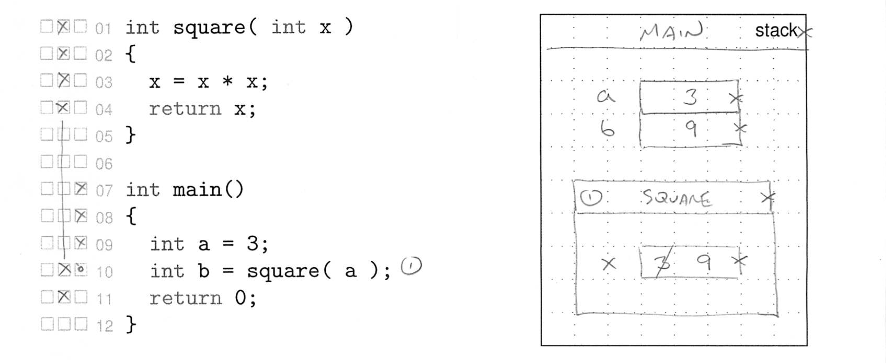
Notice that line 3 both reads and writes the variable named x. This is
perfectly fine. Also notice that x is a parameter. Since C uses
call-by-value semantics, this update to x in no way affects variables
allocated on the callee's stack frame (e.g., a on the stack frame for
main). Functions are free to modify their parameters since they contain
a copy of the value passed in as a parameter.
Let's explore another example to illustrate name binding.
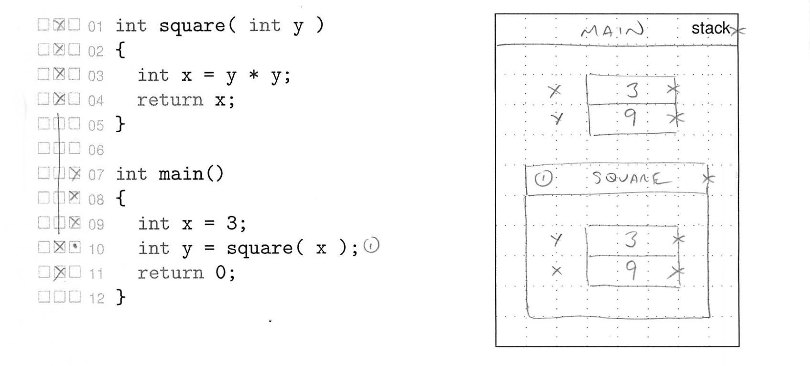
Notice that this C program includes two variables named x and two
variables named y. Our name binding rules can help us determine which
variable declaration corresponds to which variable name. Consider the
read of x on line 10. This name must correspond to the variable
declared on line 9 since that is the first variable declaration we find
when working backwards. Now consider the read of x on line 3. This name
must correspond to the variable declared on line 1 (i.e., the parameter).
The variable named y on line 3 has absolutely nothing to do with the
variable named y on line 10. Finally, consider the read of x on line
4. This name must correspond to the variable declared on line 3 (i.e., a
local variable in the local scope of the function body). The variable
named x on line 4 has absolutely nothing to do with the variable named
x on line 9. In general, we will try to avoid using the same variable
names, but regardless we can always apply our name binding rules to
unambiguously determine which variable declaration corresponds to which
variable name.
Let's explore another example to illustrate nested function calls.
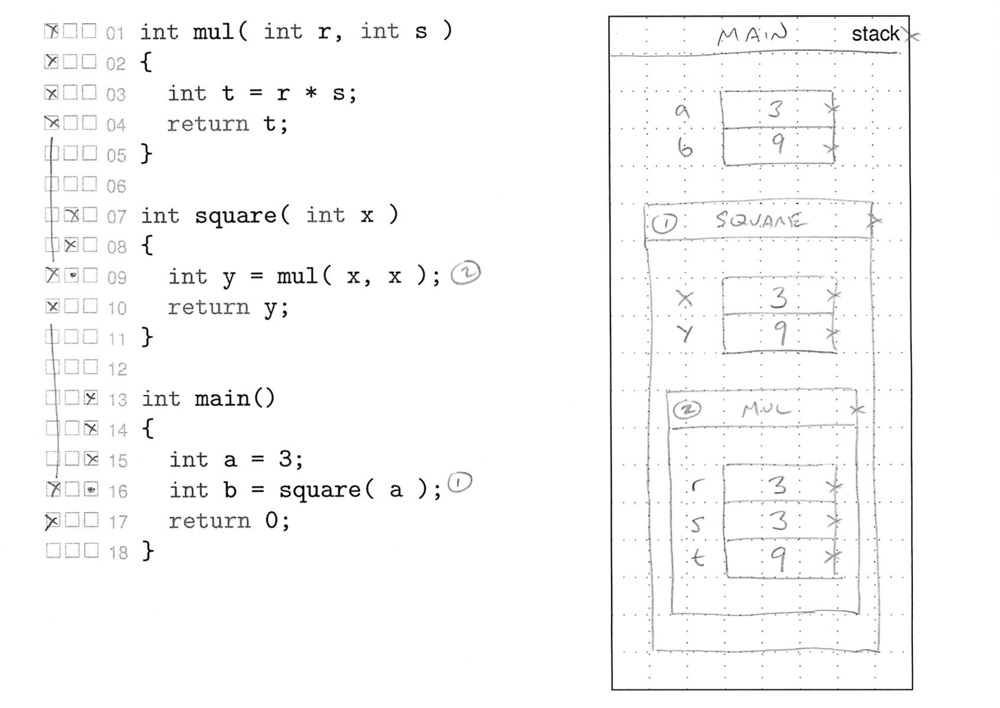
In this example, the square function calls the mul function to do the
actual multiplication. Notice that the stack frame for the mul function
is nested within the stack frame for the square function in the state
diagram. We use a dot in the execution box to the left of line 16 and to
the left of line 9 to indicate when each function is called. We shift
marking execution boxes one column to the left each time we move our
execution arrow backwards, and we use a line to indicate skipping
statements when moving our execution arrow forward. We use unique numbers
to mark where square and mul are called in the source code.
Let's explore another example to illustrate the need for temporary storage on the stack when evaluating parameters.
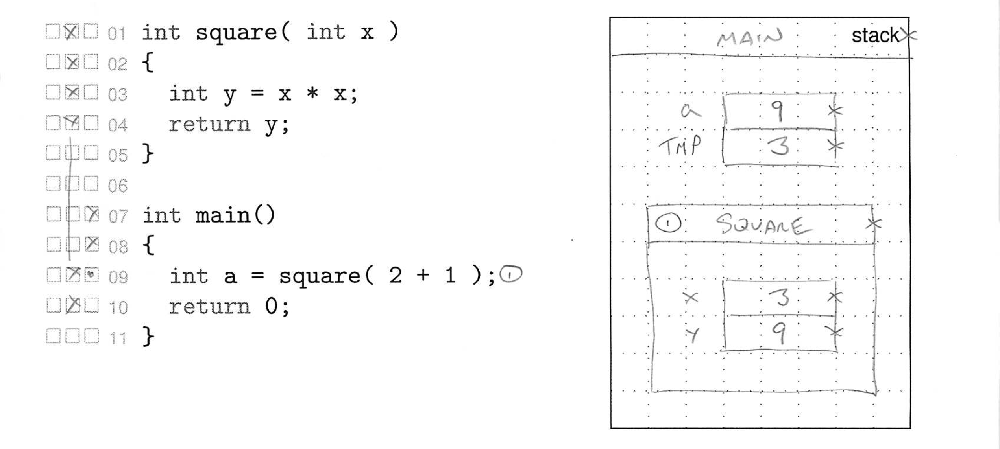
In this example, we use a non-trivial expression (2 + 1) as a parameter
to the square function. In this situation, we need to allocate a
temporary variable on the stack to hold the result of evaluating this
expression. We will usually name these variables TMP on the stack. Once
we have evaluated all parameters in step 1, then we can move on to step 2
in the function call semantics.
In our final example, we will explore calling a function whose parameter is the result of a function call.
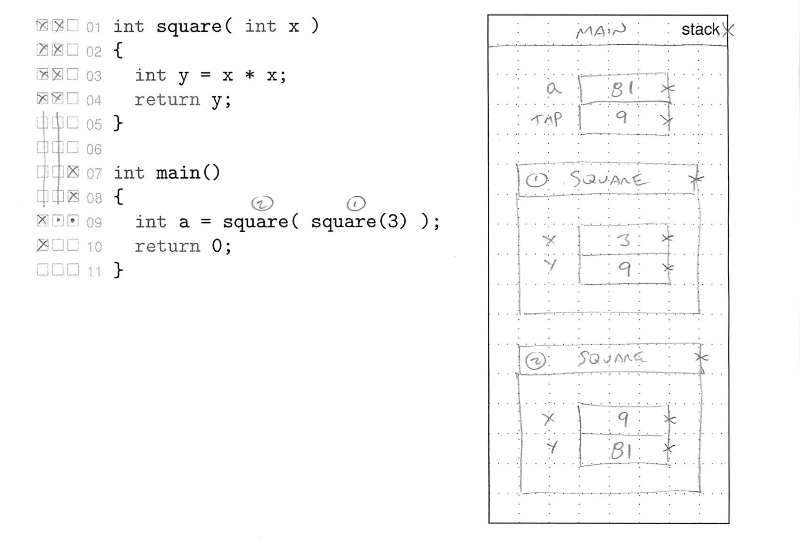
Notice that these two function calls are not nested. Step 1 of the
function call semantics tells us we must evaluate all parameters. So we
first complete all ten steps for the first function call before we start
the ten steps for the second function call. As with the previous example,
we allocate a temporary variable on the stack (TMP) to hold the result
of the first function call. Then we can copy the value from TMP into
the parameter in step 4 of the second function call. The execution boxes
clearly indicate how the execution arrow moves through the program. We
use two dots to the left of line 9 to indicate the two calls to the
square function.
Activity 9: State Diagram for mul/odd Function Calls
Consider the following program which includes two simple functions: one to calculate whether or not a given parameter is odd, and one to multiply to integers. Draw a state diagram corresponding to the execution of this program.
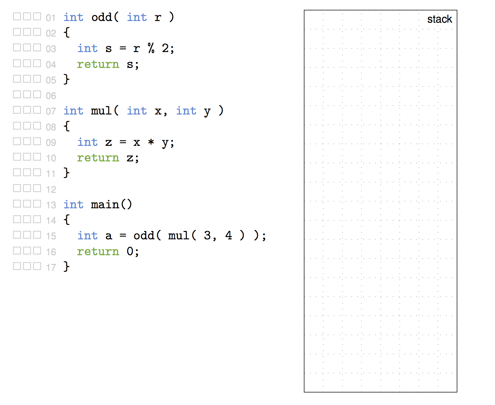
Activity 10: State Diagram for Multiple avg Function Calls
Consider the following program which calls an avg function three
different times. Draw a state diagram corresponding to the execution
of this program. Recall that we must allocate space on the callers
stack for a temporary value when evaluating non-trivial expressions
passed as parameters to a function.
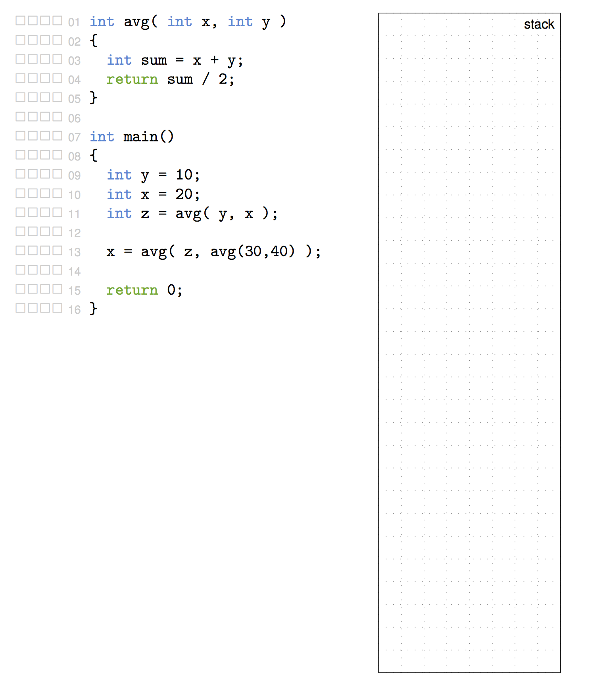
4.3. The printf Function¶
The printf function is provided by the C standard library and can be
used to print values to the screen. The pseudo-code for the printf
function definition is shown below.
1 2 3 4 5 6 7 | printf( format_string, value0, value1, ... ) { substitute value0 into format_string substitute value1 into format_string ... display final format_string on the screen } |
An example of calling printf is shown below.
1 2 3 4 5 6 7 8 9 10 11 12 13 14 15 | #include <stdio.h> int square( int x ) { int y = x * x; return y; } int main() { int a = 3; int b = square( a ); printf( "square of %d is %d\n", a, b ); return 0; } |
Line 1 uses the C preprocessor to import code from the standard library.
Here we are importing the code in the stdio.h file which includes
various functions for handling standard input from the screen and
standard output to the screen. The actual call to printf is online 13.
The format string includes various format specifiers as place holders
for where to substitute the values. In this example we are using the %d
format specifier to print an integer. Values are substituted based on
their order. So the first value is substituted for the first %d, the
second value is substituted for the second $d, and so on. \n is a
special escape sequence that outputs a newline (i.e., line break). We
will learn more about strings in Topic 5.
We will be using two online tools to enable us to quickly experiment with small C programs. The first online tool is called Compiler Explorer:
You can enter simple C functions in the left text box, and then Compiler
Explorer will display the corresponding machine instructions (i.e.,
assembly code) in the right text box. This is a great way to quickly use
your browser to see the connection between C programs and the low-level
computer hardware. Compiler Explorer color codes the C program and the
machine instructions, so it is possible to see which C statements compile
into which machine instructions. There is a drop-down menu to choose
different compilers. There is also a text box where you can enter various
compiler command line options. If you add the -O3 command line option
you will see the optimized machine instructions, while if you remove the
-O3 command line option you will see the unoptimized machine
instructions. The unoptimized x86 machine instructions (i.e., without the
-O3 compiler option) for our square function are shown below.
1 2 3 4 5 6 7 8 9 10 | square(int): push rbp mov rbp, rsp mov DWORD PTR [rbp-20], edi mov eax, DWORD PTR [rbp-20] imul eax, DWORD PTR [rbp-20] mov DWORD PTR [rbp-4], eax mov eax, DWORD PTR [rbp-4] pop rbp ret |
The optimized x86 machine instructions (i.e., with the -O3 compiler
option) for our square function are shown below.
1 2 3 4 | square(int): imul edi, edi mov eax, edi ret |
Even without knowing anything about the details of each machine instruction, it is clear that the compiler has been able to significantly optimize a way unnecessary work. Modern compilers are very sophisticated so it is important to avoid premature manual optimization at the C source code level. Develop your programs so they are elegant and easy to read. Let the compiler optimize as much as it can. Then evaluate your program and only if there is an issue in terms of performance and/or space usage should you start optimizing.
The second online tool is called Repl.it:
You can use Repl.it without an account. You can always create an account
later. Click new repl in the upper right-hand corner. In the Search
for a language drop-down choose C and the click Create repl. You will
see a default program. Click run. This will compile and execute your C
program in the cloud and then display the output on the right. This is a
great way to quickly experiment with C programs in your browser. The
output of running the program is shown in the right text box. A link to a
repl.it for our square program is show below.
Activity 11: Write a Function to Increment by One
Use Repl.it to develop a function that increments a given value by one. The function should take one parameter as shown below:
1 | int increment( int x ) |
Here is an initial Repl.it to get you started.
5. Conditional Statements¶
A conditional statement enables programs to make decisions based on the
values of their variables. Conditional statements enable non-linear
forward control flow (i.e., the execution arrow will skip over
statements). In this section, we will first discuss a new set of Boolean
operators before discussing two kinds of conditional statements:
if/else and switch/case statements.
5.1. Boolean Operators¶
Boolean operators are used in expressions which evaluate to a "Boolean" value (i.e., true or false). C does not provide any built-in types for Boolean values as in many other programming languages. A "Boolean" value is just an integer, where we interpret a value of zero to mean false and an non-zero value to mean true. Nine Boolean operators are shown below.
| Operator | Meaning |
|---|---|
expr1 == expr2 |
tests if expr1 is equal to expr2 |
expr1 != expr2 |
tests if expr1 is not equal to expr2 |
expr1 < expr2 |
tests if expr1 is less than to expr2 |
expr1 <= expr2 |
tests if expr1 is less than or equal to expr2 |
expr1 > expr2 |
tests if expr1 is greater than to expr2 |
expr1 >= expr2 |
tests if expr1 is greater than or equal to expr2 |
!expr |
computes the logical NOT of expr |
expr1 && expr2 |
computes the logical AND of expr1 and expr2 |
expr1 || expr2 |
computes the logical OR of expr1 and expr2 |
Using these operators in an expression evaluates to either zero (false) or one (true). As with all operators, we need to add the Boolean operators to the operator precedence table.
| Category | Operator | Associativity |
|---|---|---|
| Unary | ! |
right to left |
| Multiplicative | * / % |
left to right |
| Additive | + - |
left to right |
| Relational | < <= > >= |
left to right |
| Equality | == != |
left to right |
| Logical AND | && |
left to right |
| Logical OR | || |
left to right |
| Assignment | = |
right to left |
An example C program that uses Boolean operators is shown below.
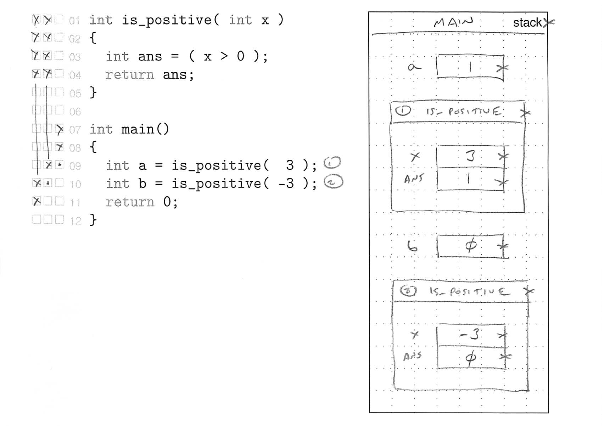
The Boolean expression (x > 0) evaluates to either a zero or one based
on whether or not x is positive or negative.
Activity 12: Write a Function to Check Perfect Squares
Use Repl.it to develop a function that takes two integer parameters and checks to see if one parameter is a perfect square of the other. The order should not matter. Only use arithmetic and Boolean operators. Do not use any conditional statements. The function prototype is shown below.
1 | int is_perfect_square( int x, int y ) |
Here is an initial Repl.it to get you started.
5.2. if/else Conditional Statements¶
if/else conditional statements are used to conditionally execute one of
several statements based on one or more conditional expressions. The
syntax for if/else conditional statements is shown below.
1 2 3 4 | if ( conditional_expression ) then_statement; else else_statement; |
The conditional expression is an expression that returns a Boolean. The then statement is executed if the conditional expression is true. The else statement is executed if the conditional expression is false.
if/else conditional statements can also include additional if else
conditional expressions to create a "chain" of statements where exactly
one is executed.
1 2 3 4 5 6 | if ( conditional_expression0 ) then_statement0; else if ( conditional_expression1 ) then_statement1; else else_statement; |
Either the first then statement, the second then statement, or the else statement will be executed. Since blocks are just (compound) statements, the then and/or else statements can also be a blocks in which case the syntax is as follows.
1 2 3 4 5 6 7 8 9 10 11 12 | if ( conditional_expression0 ) { then_statement0; then_statement1; } else if ( conditional_expression1 { then_statement2; then_statement3; } else { else_statement0; else_statement1; } |
An example C program that uses if/else conditional statements is shown
below. This program includes an abs function to calculate the absolute
value of the given integer parameter.
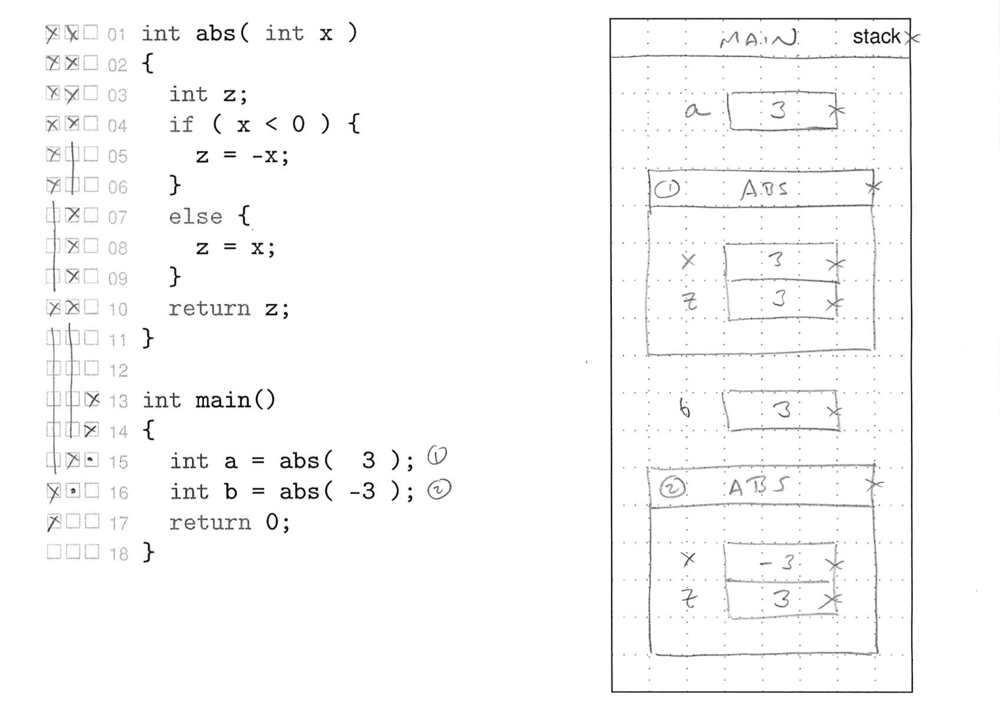
In this example, the conditional expression (x < 0) is on line 4. The
then statement is a block that starts with the open curly brace on line 4
and ends with the close curly brace on line 6. The else statement is also
a block. The execution boxes illustrate the non-linear control flow with
each call to abs skipping some of the statements.
Activity 13: State Diagram for Function to Check Monoticity
Consider the following function that takes three integer parameters and checks to see if these values are monotonically increasing or monotonically decreasing. The function will return the value 1 if the parameters are monotonic and will return the value 0 otherwise. Draw a state diagram corresponding to the execution of this program.
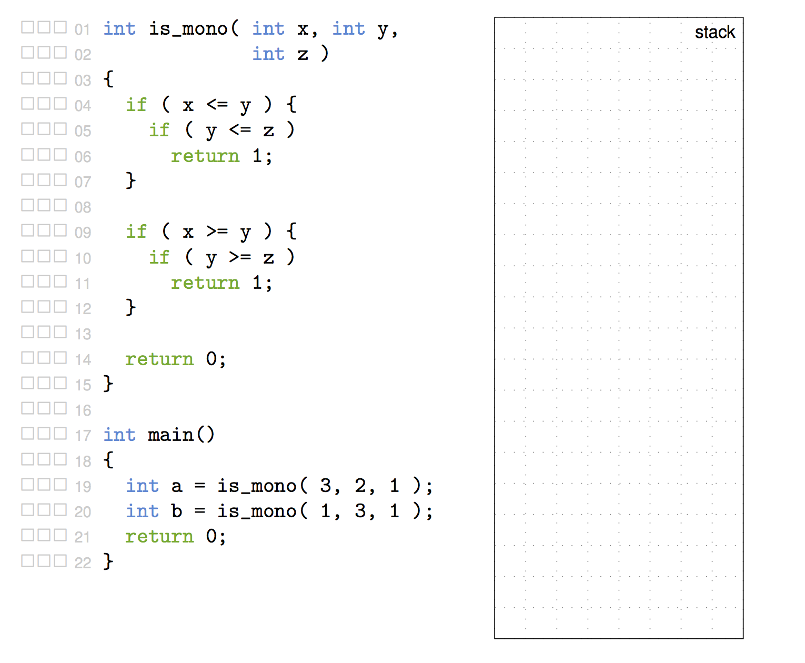
Activity 14: Write Function to Find Median of Three
Use Repl.it to develop a function that takes three integer parameters and returns the median. The function prototype is shown below.
1 | int median( int x, int y, int z ) |
Here is an initial Repl.it to get you started. Try to minimize the number of Boolean operators. Can you implement this function with only five Boolean operators?
5.3. switch/case Conditional Statements¶
switch/case conditional statements are used to conditionally execute
one or more statements based a selection expression. The syntax for
switch/case conditional statements is shown below.
1 2 3 4 5 6 7 8 9 10 11 12 13 14 15 16 17 18 | switch ( selection_expression ) { case case_label0: case_statement0; break; case case_label1: case_statement1; break; case case_label2: case_statement3; break; default: default_statement; } |
The selection expression is an expression which returns a value which is then compared against the case labels. If there is a match, then the corresponding case statements are executed. A break statement is used to jump to the end of the switch block. If no case labels match, then the default statement is executed. Note that there can be more than one case statement for a given case label without the need for a block. If we omit the break statement, then the execution "falls through" to the next case statement until we either execute a break statement or reach the end of the switch block
An example C program that uses a switch/case conditional statement is
shown below. This program includes a days_in_month function to
determine how many days are in a given month. The month is specified as
an integer between one and 12.
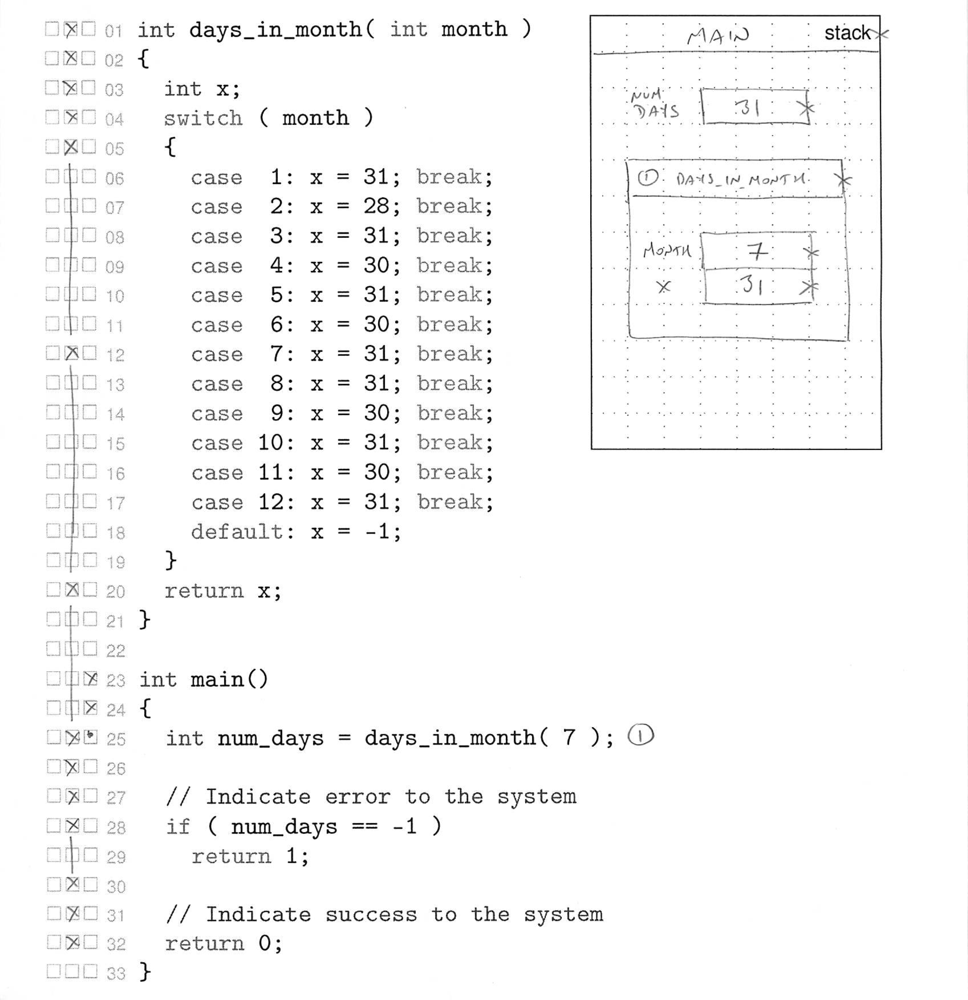
In this example, the selection expression (month) is on line 4. There
are 12 case labels. Each case statement sets the variable x
appropriately, and we include a break statement after each case
statement. Notice that this example includes basic error checking. If the
parameter is not between one and 12, then the value of the selection
express will not match any of the 12 case labels. In this situation, we
execute the default statement such that the function returns -1 to
indicate an error. The main function checks this return value to
determine if the program should exit with an exit status of 0 to indicate
success or with an exit status of 1 to indicate an error.
Activity 15: State Diagram for Function to Calculate Days in Month
Consider the following optimized implementation of the same
days_in_month function from the previous example. This
implementation uses "fall through" semantics. Draw a state diagram
corresponding to the execution of this program.
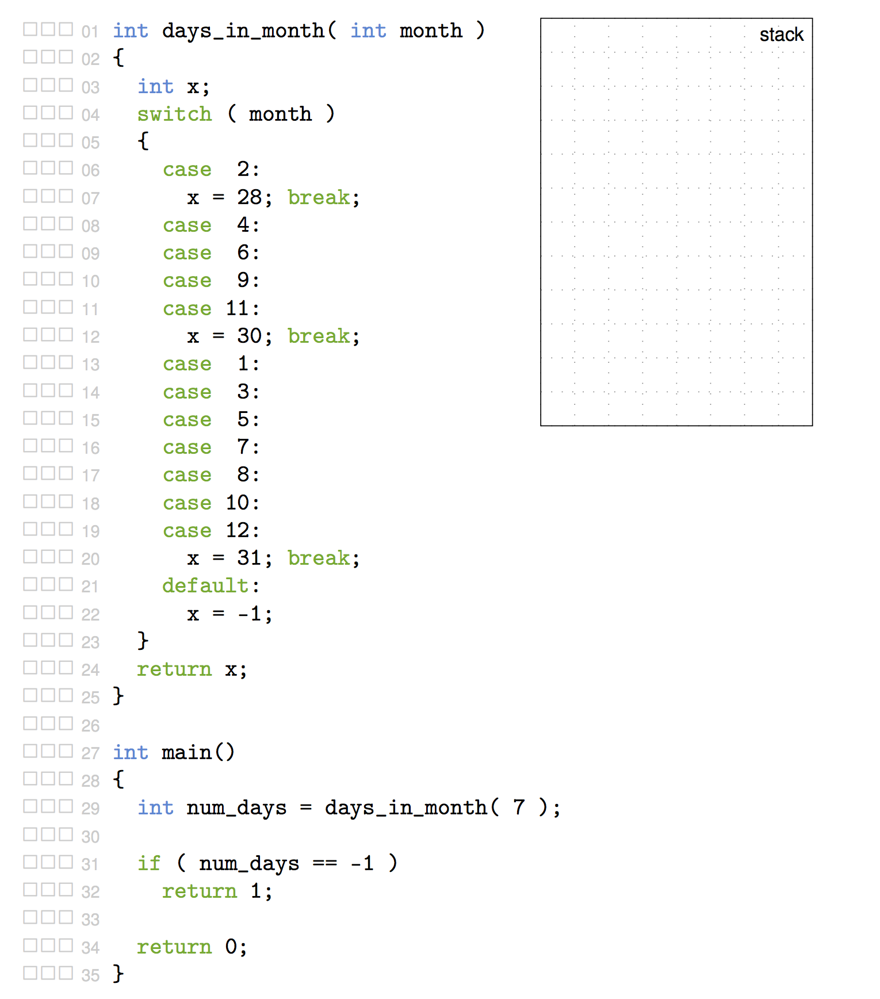
Activity 16: Write Function to Identify Small Primes
Use Repl.it to develop a function that takes an integer parameter
between 0 and 9 (inclusive) and returns a Boolean output. The
function should return true if the input is prime (i.e., 2, 3, 5, 7)
and return false if the input is not prime. Use a switch/case
conditional statement to explicitly check for these prime values. The
function prototype is shown below.
1 | int is_prime( int x ) |
Here is an initial Repl.it to get you started.
6. Iteration Statements¶
An iteration statement enables programs to repeatedly execute a
sequence of statements multiple times based on a conditional expression.
Iteration statements enable backward flow control (i.e., the execution
arrow will jump backwards). In this section, we will discuss two kinds of
iteration statements: while loops and for loops.
6.1. while Loops¶
while loops are used to repeatedly execute a sequence of statements
based on a data-dependent condition that might change during the
execution of these statements. The syntax for while loops is shown
below.
1 2 | while ( conditional_expression ) loop_body; |
The conditional expression is an expression that returns a Boolean. The loop body is a statement which is executed as long as the conditional expression is true. Since blocks are just (compound) statements, the loop body can also be a block in which case the syntax is as follows.
1 2 3 | while ( conditional_expression ) { loop_body; } |
As an aside, an infinite loop is one in which the conditional expression is never false. Infinite loops must be avoided because they will cause your program to simply hang and never finish. Unfortunately, determining whether any given loop is an infinite loop is very difficult and indeed impossible in the general case.
An example C program that uses a while loop is shown below. This
program includes a div function that implements integer division
through repeated subtraction.
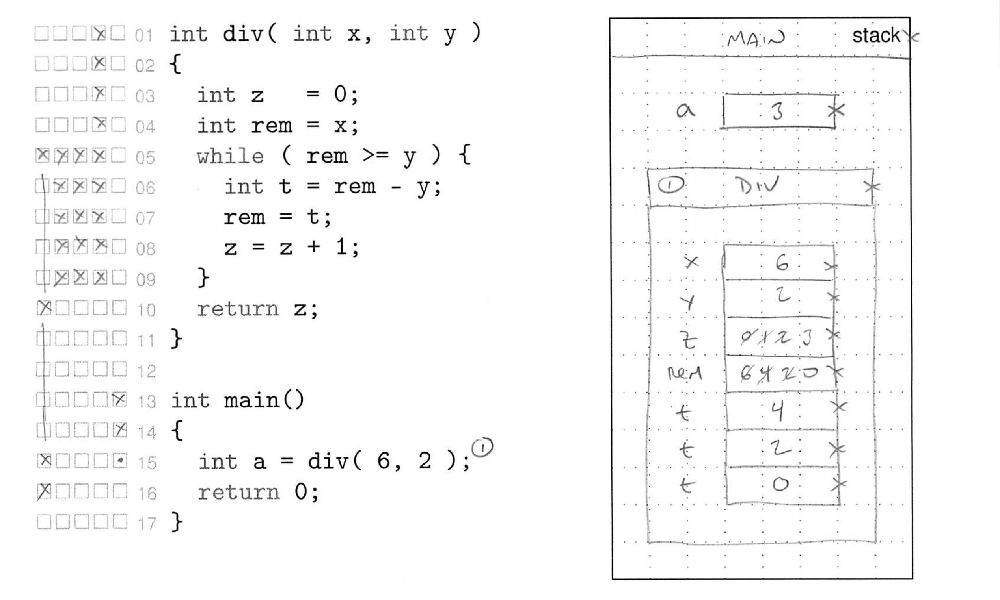
In this example, the conditional expression (rem >= y) is on line 5.
The loop body is a block that starts with the open curly brace on line 5
and ends with the close curly brace on line 9. This example uses a
temporary value (t) within the loop body. Notice how this variable is
allocated at the beginning of the loop body and then deallocated at the
end of the loop body which is why we see three different boxes named t
in the state diagram. The execution boxes to the left of line 5 show that
the conditional expression is executed four times. The final execution is
when the conditional expression is the false and we skip over the loop
body.
Activity 17: State Diagram for Function to Count Digits with while Loop
Consider the following program which includes a function to count the
number of decimal digits in a given parameter. This function uses a
while loop. Draw a state diagram corresponding to the execution of
this program.
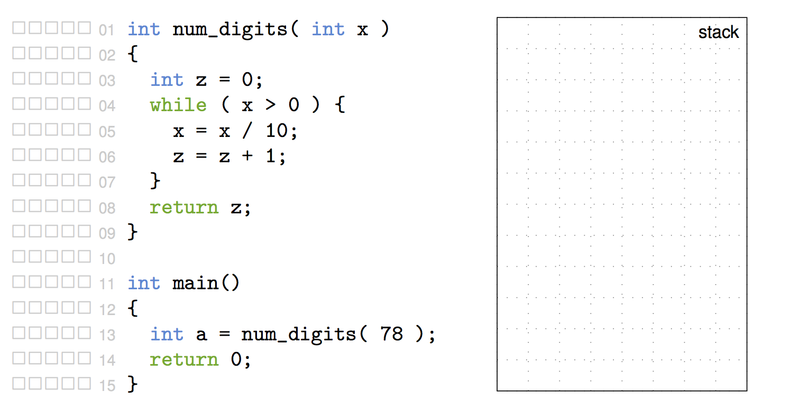
Activity 18: Write Function to Output Sequence with while Loop
Use Repl.it to develop a function that takes an integer parameter
(N) and outputs a sequence according to the pattern below. The
function should always return 0.
| N | Output |
|---|---|
| 0 | 0 |
| 1 | 0 _ |
| 2 | 0 _ 2 |
| 3 | 0 _ 2 _ |
| 4 | 0 _ 2 _ 4 |
| 5 | 0 _ 2 _ 4 _ |
| 6 | 0 _ 2 _ 4 _ 5 |
Basically the output is a sequence of integers with the odd integers
replaced with an underscore (_). Use a while loop. The function
prototype is shown below.
1 | int print_seq( int x ) |
Here is an initial Repl.it to get you started.
6.2. for Loops¶
for loops are used to repeatedly execute a sequence of statements in a
similar fashion to while loops. The key difference is that for loops
are structured so as to make iterating over a range of values relatively
straight-forward. The syntax for for loops is shown below.
1 2 | for ( initialization_stmt; cond_expr; increment_stmt; ) loop_body; |
The initialization statement is executed once before the loop body
executes. The conditional expression is an expression which returns a
Boolean value. The loop body is a statement which is executed as long
as the conditional expression is true. The increment statement is
executed at the end of each iteration (i.e., after executing the loop
body, but before evaluating the conditional expression). As with while
loops, since blocks are just (compound) statements, the loop body can
also be a block in which case the syntax is as follows.
1 2 3 | for ( initialization_stmt; cond_expr; increment_stmt; ) { loop_body; } |
An example C program that uses a for loop is shown below. This program
includes a mul function that implements integer multiplication through
repeated addition.
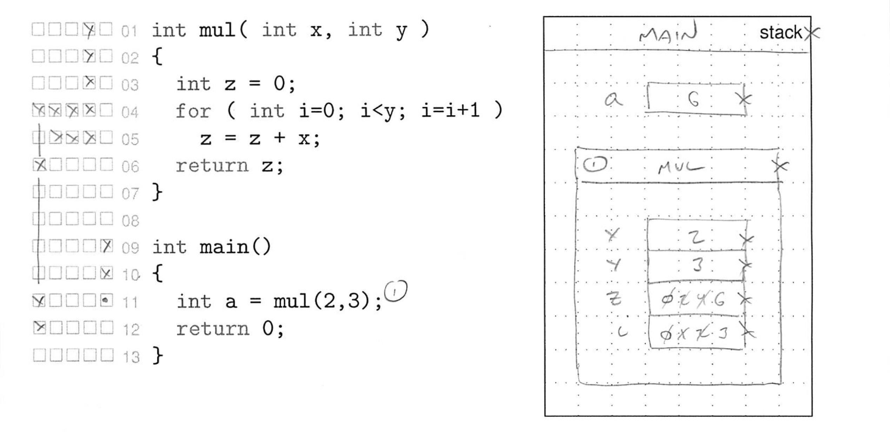
In this example, the initialization statement (int i=0), the
conditional expression (i<y), and the increment statement (i=i+1) are
all on line 4. The loop body is a single statement on line 5. The
execution boxes to the left of line 5 show that parts of this line are
executed four times. Let's step through the execution of this line in
more detail. The very first time we consider line 4, we execute the
initialization statement. The initialization statement is executed
exactly once. Any variables declared in the initialization statement are
only in scope during the execution of the loop, and they are deallocated
when the loop is finished. So in this example, the variable i is only
in scope (i.e., accessible) during the loop execution and it is
deallocated when we reach line 6. The conditional expression is evaluated
at the beginning of each loop iteration, and the increment statement is
executed at the end of each loop iteration. So the very first time we
consider line 4, we execute the initialization statement and then we
evaluate the conditional expression, which in this case is true meaning
we execute the loop body at least once. After executing the loop body we
execute the increment statement, which in this case increments the
variable i. We continue executing the loop body two more times. The
fourth time we consider line 4, the conditional expression will be false
and we skip over the loop body. So in summary, the initialization
statement is executed once, the conditional expression is evaluated four
times, and the increment statement is executed three times.
Activity 18: State Diagram for Function to Count Digits with for Loop
Consider the following program which includes a function to count the
number of decimal digits in a given parameter. This function uses a
for loop. Draw a state diagram corresponding to the execution of
this program.
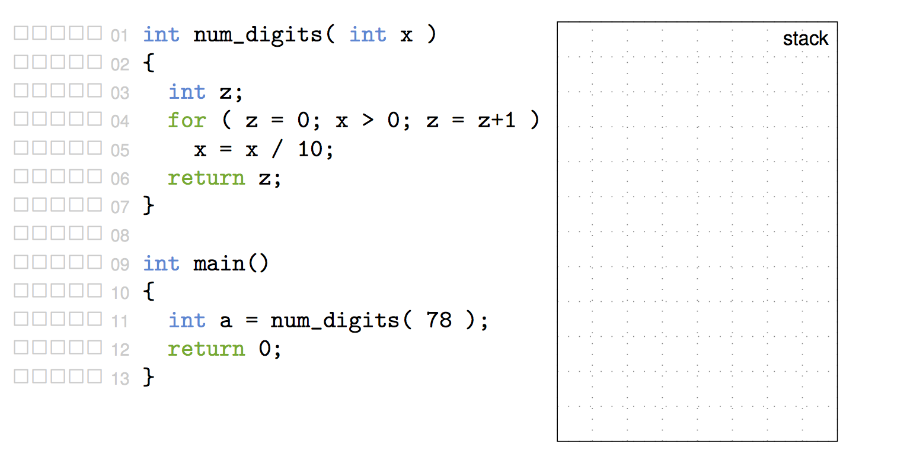
Activity 19: Write Function to Output Sequence with for Loop
Use Repl.it to develop a function that takes an integer parameter
(N) and outputs a sequence according to the pattern below. The
function should always return 0.
| N | Output |
|---|---|
| 0 | 0 |
| 1 | 0 _ |
| 2 | 0 _ 2 |
| 3 | 0 _ 2 _ |
| 4 | 0 _ 2 _ 4 |
| 5 | 0 _ 2 _ 4 _ |
| 6 | 0 _ 2 _ 4 _ 5 |
Basically the output is a sequence of integers with the odd integers
replaced with an underscore (_). Use a for loop. The function
prototype is shown below.
1 | int print_seq( int x ) |
Here is an initial Repl.it to get you started.
7. Syntactic Sugar¶
Syntactic sugar adds new syntax but not new semantics. We can explain what a given piece of syntactic sugar means by simple showing how to transform the sugar into equivalent but previously designed syntax. Syntactic sugar simplifies certain programming patterns, but again does not introduce any fundamentally new behavior.
for loops are actually just syntactic sugar for a specific common use
case of while loops. The following two loops are equivalent.
1 2 3 4 5 6 7 8 9 10 11 | for ( int i = 0; i < y; i = i+1 ) {
z = z + x;
}
{
int i = 0; // initialization statement
while ( i < y ) { // conditional expression
z = z + x;
i = i + 1; // increment statement
}
}
|
This equivalence should clarify some of our earlier discussion. The initialization statement on line 6 is executed exactly once before starting the execution of the loop. The conditional expression is evaluated before executing the loop body, and the increment statement is executed at the end of each iteration (before we evaluate the conditional expression for the next iteration).
C provides several assignment operators that are just syntactic sugar for common programming patterns.
| Sugar | Equivalent Syntax |
|---|---|
x += y |
x = x + y |
x -= y |
x = x - y |
x *= y |
x = x * y |
x /= y |
x = x / y |
C also provides postfix and prefix operators that are useful for incrementing and decrementing variables.
| Sugar | Equivalent Syntax | Value |
|---|---|---|
x++ |
x = x + 1 |
x |
++x |
x = x + 1 |
x + 1 |
x-- |
x = x - 1 |
x |
--x |
x = x - 1 |
x - 1 |
The difference between the postfix versions (x++) and the prefix
versions (++x) has to do with how these expressions are evaluated. The
value of x++ is x, but the value of ++x is x + 1. For
example, consider the following simple program which uses a postfix
operator.
1 2 | int i = 1; int j = i++; |
After executing these two statements, the value of i will be 2 and the
value of j will be 1. Now consider the following simple program which
uses a prefix operator.
1 2 | int i = 1; int j = ++i; |
After executing these two statements, the value of i will be 2 and the
value of j will also be 2.
C provides a compact way to write if/else statements using the ternary
operator. The syntax for the ternary operator is as follows.
1 | ( conditional_expression ) ? then_expression : else_expression |
Thus the following two functions are equivalent.
1 2 3 4 5 6 7 8 9 10 11 | int min( int x, int y )
{
if ( x < y )
return x;
return y;
}
int min( int x, int y )
{
return ( x < y ) ? x : y;
}
|
We have now introduce several new operators, so we need to update our operator precedence table.
| Category | Operator | Associativity |
|---|---|---|
| Postfix | a++ a-- |
left to right |
| Unary | ! ++a --a |
right to left |
| Multiplicative | * / % |
left to right |
| Additive | + - |
left to right |
| Relational | < <= > >= |
left to right |
| Equality | == != |
left to right |
| Logical AND | && |
left to right |
| Logical OR | || |
left to right |
| Assignment | = += -= *= /= a?b:c |
right to left |